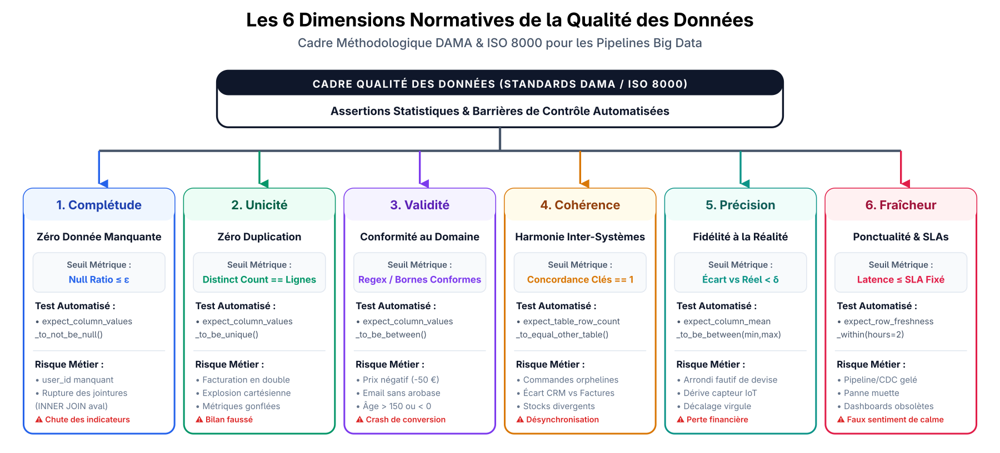

L'Analogie du Réseau de Distribution d'Eau Potable
1. La Rivière Brute (Sources de Données)
Flux ininterrompu d'événements (Kafka, CDC) charriant impuretés et sédiments imprévus.
2. L'Usine de Traitement (Moteur Spark)
Puissance de calcul distribuée pour filtrer et transformer des volumes colossaux de données.
3. Vanne de Sécurité & Laboratoire (Quality Gate)
Contrôle continu des échantillons : dérivation immédiate des eaux souillées vers un bassin de quarantaine (DLQ).
4. Robinets des Citoyens (Consommateurs)
Distribution d'une eau 100% conforme pour les dashboards de décision et les modèles d'intelligence artificielle.

Pourquoi Apache Spark ne suffit-il pas en Production ?
Tolérance aux Pannes Interne (In-Memory Scope)
Le modèle RDD Lineage reconstruit automatiquement les partitions perdues lors du crash d'un Worker.
Cécité Sémantique (Semantic Blindness)
Spark termine avec un Exit Code 0 même si 100% des lignes comportent des montants négatifs ou des clés dupliquées.
Crash du Driver (Driver OOM)
Si le Driver manque de mémoire, toute l'application s'arrête brutalement sans reprise globale autonome.
Fragilité aux Frontières Externes
Incapacité à maîtriser les dérives de schéma (Schema Drift) ou les indisponibilités d'APIs amont.

Les 4 Piliers Fondamentaux de la Recherche
Pilier 1
Reprise des OrchestrateursOrchestration Task Recovery
- Persistance d'état (State Backend)
- Reprise granulaire (Downstream Only)
- Isolation par conteneurs K8s
- Orchestration déclarative par actifs
Pilier 2
Surveillance QualitéData Quality Monitoring
- Les 6 dimensions de la qualité
- Architecture Coupe-Circuit
- Assertions Great Expectations
- Pattern Write-Audit-Publish (WAP)
Pilier 3
Traçabilité & ObservabilitéLineage & Observability
- Les 4 piliers de l'observabilité
- Analyse causale amont (RCA)
- Rayon d'impact aval (Blast Radius)
- Précision du Column-Level Lineage
Pilier 4
Pathologies des RetriesRetries Pitfalls & Patterns
- Tempête de réessais (Thundering Herd)
- Non-idempotence & écritures doubles
- Backoff exponentiel avec gigue
- Files de messages morts (DLQ)
Mécanismes de Reprise après Échec dans l'Orchestration
Modélisation formelle en Directed Acyclic Graph : \( G = (V, E) \)
1. Découplage de l'État (State Backend)
Base relationnelle externe (PostgreSQL) enregistrant les statuts en continu :
{QUEUED, RUNNING, SUCCESS, FAILED, UPSTREAM_FAILED}
En cas de crash de l'ordonnanceur, l'état global est préservé sans perte d'historique.
2. Reprise Granulaire Sélective
Si la tâche 4 échoue après l'achèvement réussi de 3 étapes lourdes, le DAG complet N'EST PAS relancé. L'exécution reprend uniquement à partir du composant défaillant (Downstream Only).
3. Sonde de Vitalité (Heartbeat)
Surveillance active du signal des nœuds d'exécution. Si un worker s'éteint, la tâche est marquée FAILED pour éviter les tâches fantômes (Zombie Tasks) et libérer les verrous.
Isolation par Conteneurs (K8s) et Orchestration par Actifs
Isolation des Pods (KubernetesPodOperator)
Chaque tâche Spark tourne dans un pod K8s autonome avec limites strictes de RAM/CPU, protégeant l'orchestrateur partagé.
Blocage d'Impact Aval (Upstream Blast Block)
Marquage immédiat des successeurs en UPSTREAM_FAILED pour empêcher l'ingestion de données incomplètes.
Auto-Scaling de Mémoire au Retry
Relance sélective du pod défaillant avec doublement de la mémoire (8GiB vers 16GiB).
Orchestration par Actifs (Dagster)
Raisonnement fondé sur l'état des tables cibles plutôt que sur l'enchaînement arbitraire de scripts impératifs.

Les 6 Dimensions Normatives de la Qualité des Données

Architecture Coupe-Circuit (Data Quality Circuit Breaker)
1. Zone Bronze (Ingestion Brute)
Réception brute des événements (Kafka / S3) et calcul immédiat des métriques de volumétrie.
2. Moteur de Validation (Silver)
Exécution des suites d'assertions déclaratives (Great Expectations / Soda Core) sur les tables intermédiaires.
3. Porte de Décision & Coupe-Circuit
• Succès : promotion fluide vers la couche Gold certifiée.• Échec : déclenchement du coupe-circuit, séquestration dans une table de quarantaine (DLQ), gel des rapports BI et alerte PagerDuty.

Le Pattern Write-Audit-Publish (WAP) dans les Lakehouses
1. Écriture Isolée (WRITE Stage)
Écriture dans une branche de staging isolée (Apache Iceberg / Delta Lake) sans altérer la branche de production 'main'.
2. Audit Automatisé (AUDIT Stage)
Vérification intégrale des schémas, métriques et contraintes métier sur la branche de staging isolée.
3. Publication Atomique ou Annulation
• Succès : permutation atomique du pointeur de métadonnées (Fast-Forward sans temps d'arrêt).• Échec : destruction intégrale de la branche de staging sans aucune lecture sale (Zero Dirty Reads).

Diagnostic Rapide via l'Observabilité et le Lignage de Données
Les 4 Piliers de l'Observabilité
Métriques (Metrics) + Journaux (Logs) + Traces distribuées + Lignage (Lineage).
Analyse Causale Amont (Upstream RCA)
Remontée instantanée des arêtes du graphe pour identifier l'altération source (ex: altération de type dans PostgreSQL).
Analyse de Rayon d'Impact Aval (Blast Radius)
Cartographie de tous les tableaux de bord et modèles ML impactés pour notification préventive.
Le Standard Ouvert OpenLineage
Émission continue de métadonnées JSON standardisées vers Marquez ou DataHub.

Précision Chirurgicale du Column-Level Lineage
Limite du lignage classique de table
Signale simplement que la table gold_kpi est erronée suite à un problème dans forex_rates, sans explication fine.
Lignage au Niveau des Colonnes
Relie la formule arithmétique Spark au champ exact :revenue_usd = (amount_cents / 100.0) * rate_to_usd
Isolement Racine Immédiat
Identification de la cause unique : valeur NULL dans rate_to_usd. Réduction du MTTR de plusieurs heures à quelques secondes.

Risques et Effets Pervers des Réessais Naïfs (Naive Retries)
1. Tempête de Réessais (Retry Storm)
Des délais d'attente fixes amènent des dizaines de workers à réattaquer simultanément une base affaiblie (Thundering Herd), précipitant son écroulement complet.
2. Opérations Non-Idempotentes
Répéter un 'INSERT INTO' après une coupure transitoire crée des duplications massives et altère les agrégats financiers : \( f(f(x))
eq f(x) \).
3. La Pilule Empoisonnée (Poison Pill)
Erreur déterministe dans une ligne de données (ex: cast invalide). Relancer 10 fois échouera 10 fois à coup sûr en gaspillant des budgets Cloud colossaux.

Solutions Avancées et Alternatives Résilientes
1. Backoff Exponentiel avec Gigue
Espacement exponentiel avec bruit aléatoire uniforme :t_wait = min(t_max, U(0, t_base * 2^attempt))Désynchronisation complète des requêtes pour éliminer l'effet de troupeau tonitruant.
2. Idempotence Stricte (ACID Merge)
Garantie formelle d'état identique en cas de répétition :f(f(x)) = f(x)Substitution de l'insertion brute par MERGE / UPSERT dans Delta Lake et Iceberg.
3. Files de Quarantaine (DLQ)
Capture et séquestration des enregistrements toxiques dans une table quarantine_records tout en poursuivant le traitement des millions de lignes saines.
Matrice Comparative : Pratique Naïve vs Architecture de Production
| Dimension d'Ingénierie | Pratique Naïve Classique | Architecture Résiliente de Production | Technologies de Référence |
|---|---|---|---|
| Gestion de Reprise | Relance intégrale du DAG depuis le début | Reprise sélective granulaire et isolation en pods K8s | Airflow K8s, Dagster Assets |
| Contrôle Qualité | Audit manuel, ou attente des réclamations | Assertions proactives et disjoncteurs automatiques | Great Expectations, Soda Core |
| Diagnostic des Pannes | Fouille artisanale dans des logs dispersés | Traçabilité fine au niveau colonne et graphes OpenLineage | OpenLineage, Marquez, DataHub |
| Politique de Réessai | Réessais immédiats à intervalles fixes | Backoff exponentiel avec gigue + MERGE + DLQ | Backoff Jitter, Lakehouse, DLQ |
| Protection des Sorties | Écritures directes dans les tables cibles | Pattern Write-Audit-Publish atomique (branches staging) | Apache Iceberg, Delta Branches |